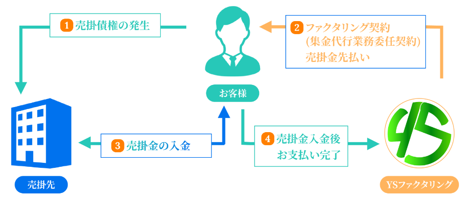
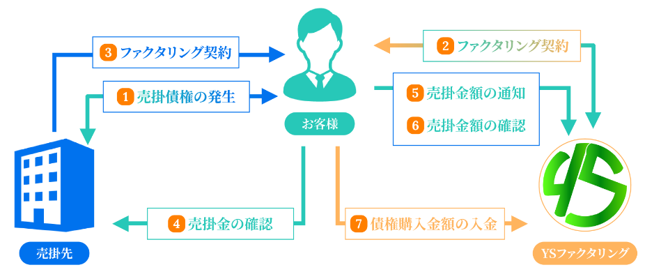

<!DOCTYPE html>
<html lang="ja">
<head>
  <meta charset="UTF-8" />
  <meta name="viewport" content="width=device-width,initial-scale=1.0" />
  <meta name="format-detection" content="telephone=no" />
  <!-- meta情報 -->
  <title>YSファクタリング</title>
  <meta name="description" content="" />
  <meta name="keywords" content="" />
  <!-- ogp -->
  <meta property="og:title" content="" />
  <meta property="og:type" content="" />
  <meta property="og:url" content="" />
  <meta property="og:image" content="" />
  <meta property="og:site_name" content="" />
  <meta property="og:description" content="" />
  <!-- ファビコン -->
  <link rel="”icon”" href="" />

  <!-- フォント -->
  <link rel="preconnect" href="https://fonts.googleapis.com">
  <link rel="preconnect" href="https://fonts.gstatic.com" crossorigin>
  <link href="https://fonts.googleapis.com/css2?family=Lora:wght@400;500;700&family=Noto+Serif+JP:wght@400;500;700&display=swap" rel="stylesheet">

  <!-- css -->
  <link rel="stylesheet" href="./assets/css/styles.css">
  <!-- JavaScript -->
  <script src="https://code.jquery.com/jquery-3.5.1.js"></script>
  <script defer type="text/javascript" src="./assets/js/script.js"></script>
</head>

  <body>
    <section id="structure" class="structure">
        <div class="structure__inner inner">
            <div class="structure__head section-title">ファクタリングの仕組み</div>
            <div class="structure__content">
                <div class="structure__content-title">2社間の場合</div>
                <div class="structure__items">
                    <div class="structure__image"></div>
                    <div class="structure__p">
                        ファクタリングは、売掛債権を早期に現金化したい場合に利用されています。 お持ちの売掛債権をファクタリング会社に売却すれば、手数料を差し引かれた金額を受け取ることができます。 保証人や担保の必要はありません。また弊社と御社の2社間の契約ですので、取引先の合意を得る必要もありません。
                    </div>
                </div>
            </div>
            <div class="structure__content">
                <div class="structure__content-title">3社間の場合</div>
                <div class="structure__items">
                    <div class="structure__image"></div>
                    <div class="structure__p">
                        3社間での取引の場合、取引先に対して売掛金売却の同意を得る必要があります。具体的には、取引先に債権譲渡の旨を伝えて承諾書を受け取ります。承諾を取った後、ファクタリング会社に売却した売掛金から手数料を差し引いた金額が、事業主の口座へ振り込まれます。 その後、譲渡した売掛金の入金日に、売掛先からファクタリング会社へ入金される流れになっています。 取引先に対してファクタリングの利用が知られるほか、同意を得るなどの手続きの面でも2社間取引より時間がかかるケースがほとんどです。
                    </div>
                </div>
            </div>
        </div>
    </section>

  </body>
</html>

